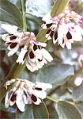

Left) These Capucijiners' soup-pea pods are easy to see when picking, and make delicious pea soup (Center) Chickpeas produce smallish, fuzzy pods, each containing one or two peas. (Right) These are 'Golden Pod' peas.